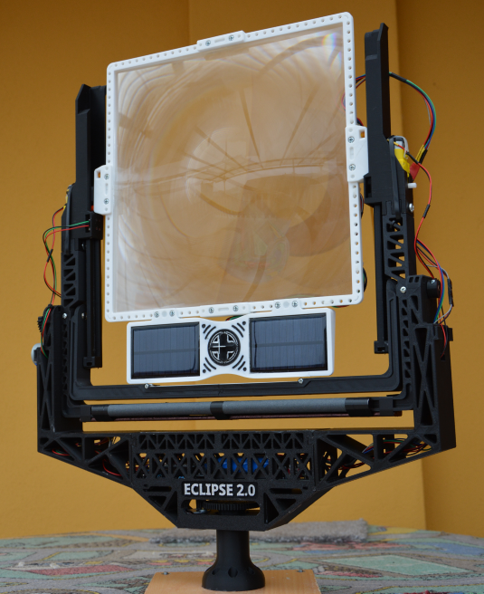
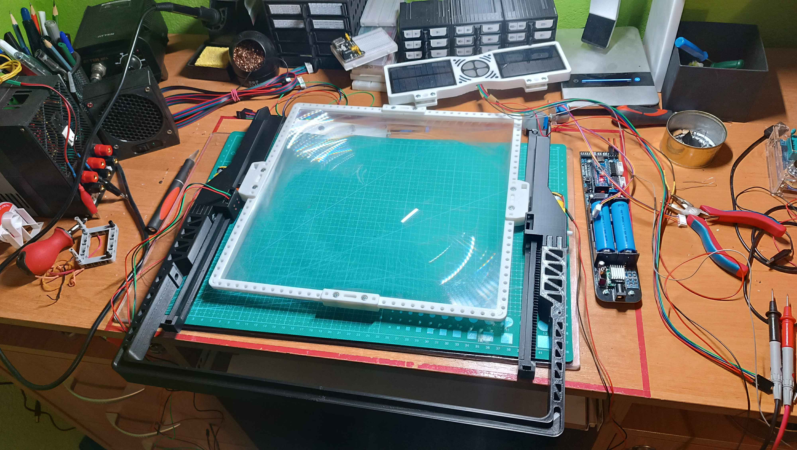
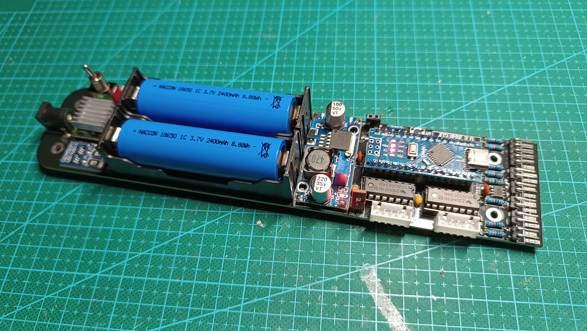
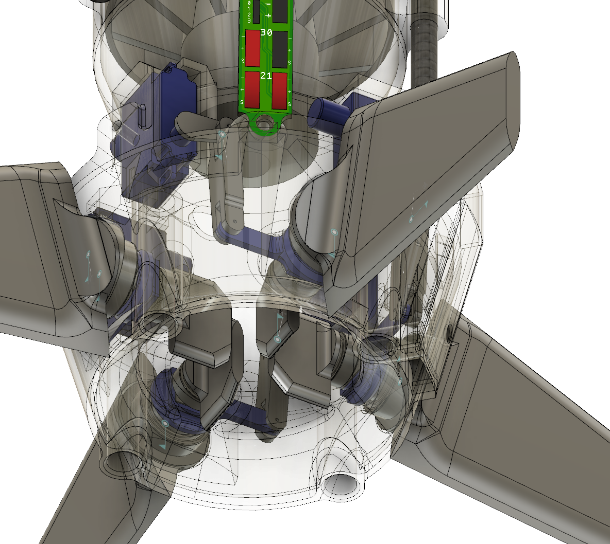
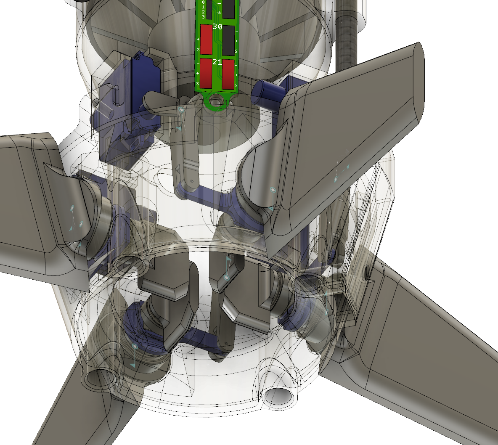
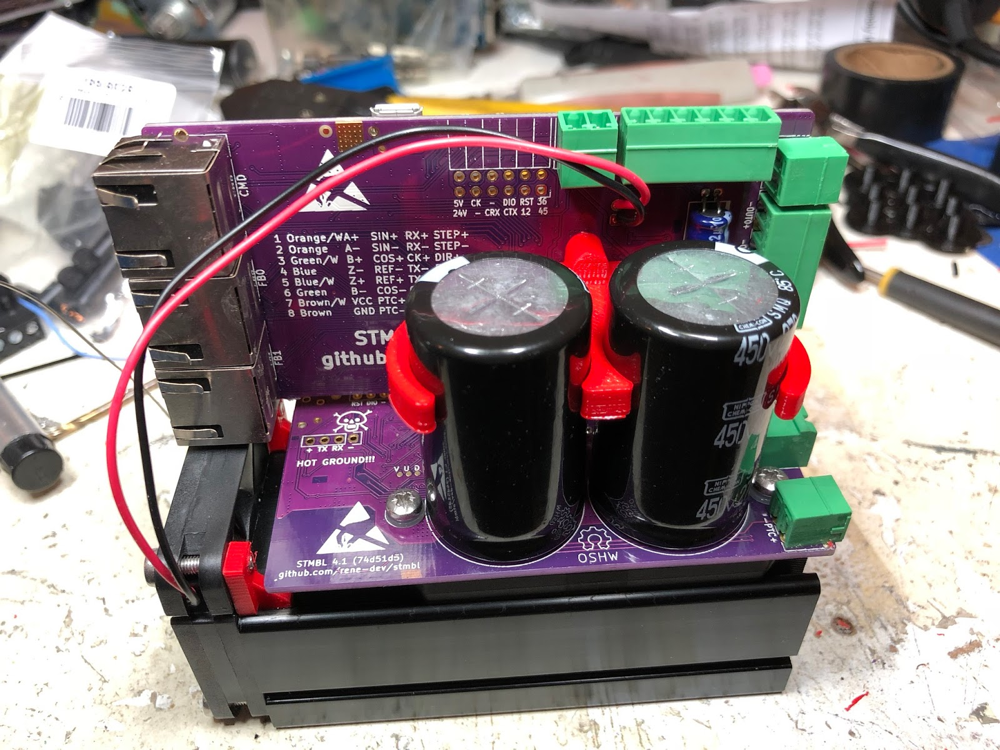
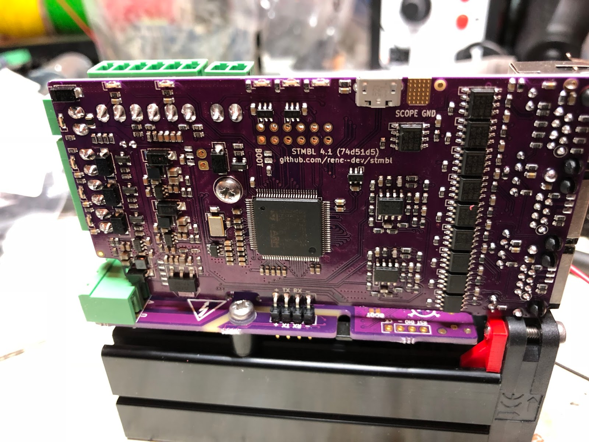
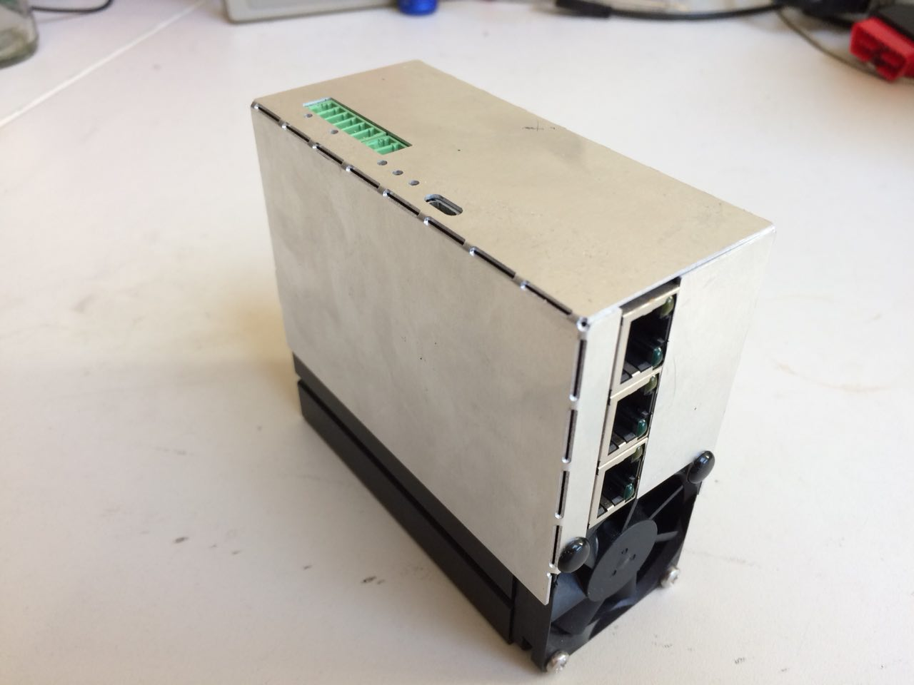
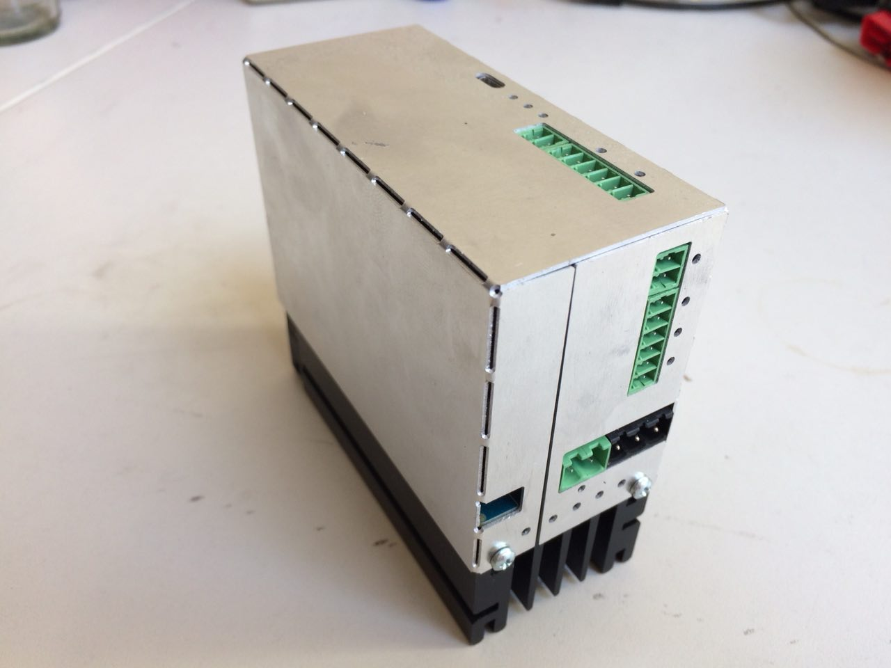

Trien N
Computer science student, Software & Mechatronics Engineer
Currently study computer science at Goldsmiths. I also build robots. I've been working with industrial fabrication equipments for 8 years.
Hardware Projects
Solar Focus
2 axis sun following device that keeps the lens the-focal-length away from the object you're trying to burn.
3d printing components, custom breakout board utilising widely available Arduino microcontroller.



Actuator Mechanism
Designed and fabricated missle fin control actuation system for team project.
Fins and TVC vanes are on the same axis. Connected to servo via linkage.
Possiblity for smaller ensemble by shifting around the servo placement or having a non-planar linkage
 

Software Projects
STMBL Framework
Maintaining Mach3 integration module.
STMBL is an open source servo drive designed for Retrofitting CNC machines and Robots.
It supports Industrial AC and DC servos with up to 320V and 2kW
Currently supported command interfaces are: Mesa Smart-Serial, Step-Dir, Quadrature, Serial



